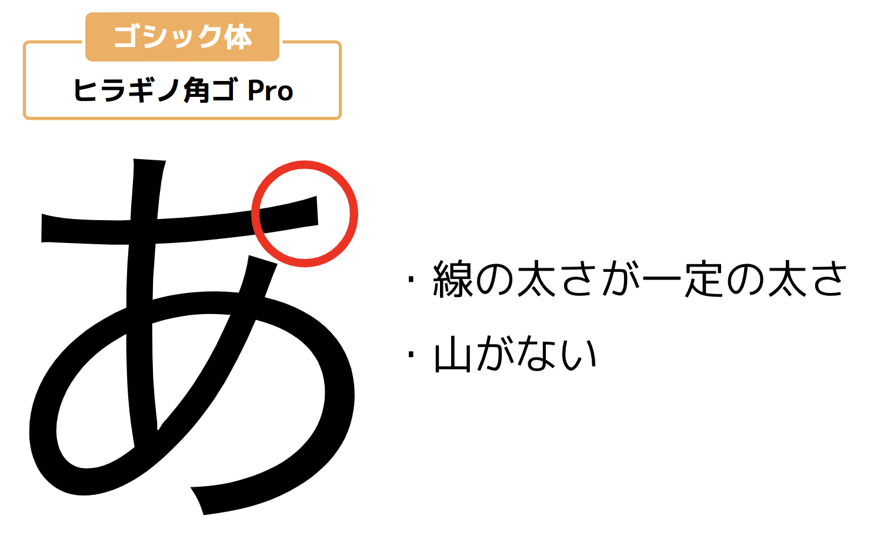

和文（日本語）のフォントには、大きく分けて明朝体とゴシック体の2種類があります。
明朝体は文字の線の太さが均一でなく、細い部分と太い部分があります。
また、線の右端や角に三角形の山（ウロコ）ができるのが特徴です。
一方で、ゴシック体は線の太さが均一で、明朝体のような山もありません
...
欧文（アルファベット）にも大きく分けて2種類のフォントがあります。それがセリフ体とサンセリフ体です。
セリフ体は線の太さが均一でなく、ヨコの線に対してタテの線が太くなります。
また、線の端には明朝体と同じようにウロコと呼ばれる飾りがあります。「セリフ」とはこの飾りのことです。
一方で、サンセリフ体は線の太さが均一で、セリフ（飾り）がありません。
サンセリフ体は読みやすいため、Webサイトでは標準フォントとして使われているケースが多いです。
プロポーショナルフォントとは、文字の幅がそれぞれ異なるフォントのことです。例えばアルファベットの「I」と
「O」では文字幅が大きく異なりますよね。
和文フォントの場合、それがプロポーショナルフォントであればフォント名に「P」がついているものが多いです。
例えば「MS Pゴシック」というフォント名にも「P」がついていますが、これはプロポーショナルフォントという意味です。